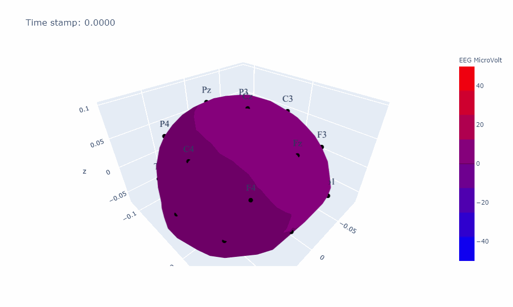

3D Head Visualizations¶
Topographic map in 3D head¶

from simpl_eeg import topomap_3d_head, eeg_objects
import warnings
warnings.filterwarnings('ignore')
Note
Please include the line below in your IDE so that the changes would be simultaneously reflected when you make a change to the python scripts.
%load_ext autoreload
%autoreload 2
Define global parameters¶
A detailed description of all parameters can be found in the topomap_3d_head.animate_3d_head docstring:
help(topomap_3d_head.animate_3d_head)
Help on function animate_3d_head in module simpl_eeg.topomap_3d_head:
animate_3d_head(epoch, plot_title='', color_title='EEG MicroVolt', color_min=-50, color_max=50, colormap='Bluered')
Plot an animated topographic map in a 3D head shape
Args:
epoch (mne.epochs.Epochs): An epoched file for the EEGLab data
plot_title (str, optionl): The title of the plot. Defaults to "".
color_title (str, optional): The title of the color bar. Defaults to "EEG MicroVolt".
color_min (int, optional): The minimum EEG voltage value to be shown on the color bar. Defaults to -50.
color_max (int, optional): The maximum EEG voltage value to be shown on the color bar. Defaults to 50.
colormap (str, optional): The colour scheme to use. Defaults to Bluered.
Returns:
figure: An animated topographic map in a 3D head shape
# change values below to values of interest
experiment_folder = "../../data/927"
nth_epoch = 0
color_min = -40
color_max = 40
colormap = "RdBu_r"
Create epoched data¶
For additional options see Creating EEG Objects section.
epochs = eeg_objects.Epochs(experiment_folder)
epoch = epochs.get_nth_epoch(nth_epoch)
Reading /Users/sasha/mds/simpl_eeg_capstone/data/927/fixica.fdt
Not setting metadata
Not setting metadata
33 matching events found
Applying baseline correction (mode: mean)
0 projection items activated
Loading data for 33 events and 2049 original time points ...
0 bad epochs dropped
Create the topographic map in 3D head shape¶
timestamp = -300 # you can change the value to the time stamp of your interest
topo_3d__head_static = topomap_3d_head.topo_3d_map(
epoch,
time_stamp,
color_title="EEG MicroVolt",
color_min=color_min,
color_max=color_max,
colormap=colormap,
)
---------------------------------------------------------------------------
NameError Traceback (most recent call last)
<ipython-input-8-fd32d8517896> in <module>
2 topo_3d__head_static = topomap_3d_head.topo_3d_map(
3 epoch,
----> 4 time_stamp,
5 color_title="EEG MicroVolt",
6 color_min=color_min,
NameError: name 'time_stamp' is not defined
topo_3d__head_static.show()
Generating the animnation¶
topo_3d_head = topomap_3d_head.animate_3d_head(
epoch,
color_title="EEG MicroVolt",
color_min=color_min,
color_max=color_max,
colormap=colormap,
)
topo_3d_head.show()
Saving the animnation¶
Save the static plot¶
static_file_path = "exports/topo_3d_static.svg" # change the file path to where you would like to save the file
topo_3d__head_static.write_image(static_file_path, engine="kaleido")
static_file_path_png = "exports/topo_3d_static.png" # change the file path to where you would like to save the file
topo_3d__head_static.write_image(static_file_path_png) # no need to specify engine if not saved as svg file
Save the animation as html¶
html_file_path = "exports/topo_3d.html" # change the file path to where you would like to save the file
topo_3d_head.write_html(html_file_path)
Save the animation as gif¶
topomap_3d_head.save_gif(epoch, gifname="topo_3d_head_ani", duration=200)
Save the animation as mp4¶
Note
You would need to save it as gif file first and then convert it into mp4 file.
import moviepy.editor as mp
clip = mp.VideoFileClip("topo_3d_head_ani.gif") # change the file path to where you saved the gif file
clip.write_videofile("topo_3d_head_ani.mp4") # change the file path to where you would like to save the file